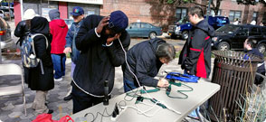

RECENT AT&T NEWS
Winter Holiday Guide to Gifting - November 19, 2012
Make Your List and Check it Twice
Check out our new Winter Holiday Guide to Gifting for the coolest phones and gadgets available from AT&T. Also, get a head start on your shopping list and browse our look book, featuring the latest and greatest devices around.
Texting While Driving - November 19, 2012
Share Your Voice, Save a Life
A recent ConnectSafely.org survey sponsored by AT&T found that 9 in 10 teens would stop texting while driving if a passenger asked them to and that more than 4 in 10 would be “thankful” if a passenger asked them to stop. Speak up and you could save a life.
Updates on Sandy Relief - November 15, 2012
The Latest Hurricane Sandy Updates
Currently, 99 percent of our sites are up and running across the region impacted by Hurricane Sandy. And nearly 97 percent of our cell sites across New York City, including in Manhattan, are up and running. Stay informed at att.com/liveblog
Updates on Sandy Relief - November 15, 2012
Our Community, Our Mission: 'Day of Caring'
On Nov. 15, employees and retirees along the East Coast will partake in a ‘Day of Caring’ – an effort to assist those affected by Hurricane Sandy. Approximately 1,500 AT&T volunteers will provide aid through local non-profit and charity work.
CORPORATE NEWS
Start your holiday shopping by finding the hottest devices for everyone’s wish list in our Holiday Gift Guide. If you’re on-the-go, print our holiday look book for the coolest phones and gadgets, or buy directly at att.com.
View the online version of the 2011 AT&T Sustainability Report, which highlights our commitment to improving our world and empowering you to do the same.
AT&T is dedicated to giving back to the brave men and women who give so much for us. See how we're helping to support our military and veterans.
AT&T Aspire expands with a new, $250 million financial commitment planned over five years to help more students graduate from high school ready for careers and college.
AT&T EcoSpace – See how we're working to achieve our long term sustainability goals and how you can help
RECENT BLOG POSTS
READ THE LATEST NEWS RELEASES
CORPORATE
-
AT&T to Invest $14 Billion to Significantly Expand Wireless and Wireline Broadband Networks, Support Future IP Data Growth and New Services
New York, New York, November 7, 2012
-
AT&T Appoints Stephanie Lynch-Habib as Sales Center Vice President of North Sales Center
London, United Kingdom, November 6, 2012
-
AT&T Making Solid Progress in Restoration Efforts for Customers
Dallas, Texas, November 4, 2012
WIRELESS AND CONSUMER SERVICES
-
AT&T 4G LTE Available in Eugene
Eugene, Oregon, November 16, 2012
-
AT&T 4G LTE Available in Corvallis
Corvallis, Oregon, November 16, 2012
-
AT&T 4G LTE Available in Jonesboro
Jonesboro, Arkansas, November 16, 2012
BUSINESS
-
A Perfect Match: Enhanced Push-to-Talk and Rugged Phones from AT&T
Dallas, Texas, November 12, 2012
-
NYU-Poly and AT&T Small Business Survey Finds Disconnect Between Mobile Device Use and Mobile Security Preparedness
Dallas, Texas, October 29, 2012
-
AT&T Government Solutions Receives Authority to Operate for Cloud Storage Service
Oakton, Virginia, October 25, 2012
INVESTOR RELATIONS
-
AT&T to Webcast Presentation by Frank Jules at Morgan Stanley Conference on November 14
Dallas, Texas, November 7, 2012
-
AT&T to Invest $14 Billion to Significantly Expand Wireless and Wireline Broadband Networks, Support Future IP Data Growth and New Services
New York, New York, November 7, 2012
-
AT&T to Webcast Presentation by John Stephens at Wells Fargo Conference on November 8
Dallas, Texas, November 1, 2012
INTERNATIONAL
-
New AT&T Global Packages Make it More Affordable for Travelers to Call, Text, Tweet and Post Abroad
Dallas, Texas, November 15, 2012
-
AT&T Appoints Stephanie Lynch-Habib as Sales Center Vice President of North Sales Center
London, United Kingdom, November 6, 2012
-
AT&T Supports Student-Led Food Drive Effort in Canada
Toronto, Canada, October 31, 2012
ALL NEWS
-
AT&T 4G LTE Available in Eugene
Eugene, Oregon, November 16, 2012
-
AT&T 4G LTE Available in Corvallis
Corvallis, Oregon, November 16, 2012
-
AT&T 4G LTE Available in Jonesboro
Jonesboro, Arkansas, November 16, 2012
WE ARE WHERE YOU ARE.
AT&T on Facebook
Subscribe to RSS
View all AT&T Social Media Channels